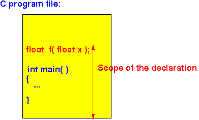
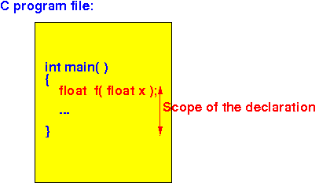
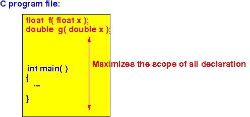

- Syntax to declare
a function in C:
[extern] return-type FuncName ( param1_type [var1], param2_type [var2], .... ) ;Note:
- The keyword
extern is
optional
- The parameter variable names are also optional
Example of function declarations:
extern float f( float x ) ; float f( float x ) ; // extern can be omitted float f( float ) ; // the parameter name can be omitted(Personally, I prefer to write float f(float x), it looks like the function definition (so I can cut and paste to create the function declaration easily)
- The keyword
extern is
optional
- Note:
- The function body is (must be) omitted in the function declaration
- The function declaration provides
the data type information to
the C compiler
- How is the
function declaration (information) used:
- Suppose the C compiler processes this function call:
z = f( x , y) ; ^ ^ ^ | | | receiving function variable input
- The C compiler will
convert the
input parameters to the
correct data type of
each parameters:
- The C compiler knows
the data type of
each parameter of the
function from the
function declaration
- The C compiler knows
the data type of
each function input of the
function from the
function call
- If the data types are different, the C compiler will perform type conversion before the input value is passed to the function !!!
- The C compiler knows
the data type of
each parameter of the
function from the
function declaration
- The C compiler will
convert the
return value to the
correct data type of
the receiving variable:
- The C compiler knows
the data type of
the return value of the
function from the
function declaration
- The C compiler knows
the data type of
the receiving variable
- If the data types are different, the C compiler will perform type conversion before the return value is stored in the receiving variable !!!
- The C compiler knows
the data type of
the return value of the
function from the
function declaration
- Suppose the C compiler processes this function call:
- Scope:
- Scope = the range (= area in a program) where a given object (e.g., variable) is accessible (or valid)
- The
scope
of a function declaration:
- A function declaration can be
placed anywhere in
a C program
- When a function declaration is
placed
outside a
function, then the
scope of this
function declaration is:
- The scope starts
at the location of the
function declaration in the
program file
- And remains valid till the end of the program file
Graphically:

- The scope starts
at the location of the
function declaration in the
program file
- When a function declaration is
placed
inside a
function, then the
scope of this
function declaration is:
- The scope starts
at the location of the
function declaration in the
program file
- And remains valid till the end of the function
Graphically:
 - The scope starts
at the location of the
function declaration in the
program file
- A function declaration can be
placed anywhere in
a C program
- Common practice of
C programmers:
- We always place
all
function declarations at the
top of all our
C program files
This will maximize the scope (area) of all of the function declarations !!!
Grpahically:
 - We always place
all
function declarations at the
top of all our
C program files
- Recall in the
last example the
C program did
not compiled due to
conflicting information in
the default parameters assumption and
the actual function definition:
#include <stdio.h> int main(int argc, char *argv[]) { short x = 2; // *** short !!! int y = 0; y = f(x); // Assumes: int f(int x) printf("x = %d, y = %d\n", x, y); } /* --------------------------------------------------- Function f( ) is defined AFTER main's use of f( ) --------------------------------------------------- */ int f(short x) { return(x*x); }We can declare the function f( ) at the start of the program to solve this problem:
#include <stdio.h> int f(short x); // function declaration !!! int main(int argc, char *argv[]) { short x = 2; // *** short !!! int y = 0; y = f(x); // Assumes: int f(int x) printf("x = %d, y = %d\n", x, y); } /* --------------------------------------------------- Function f( ) is defined AFTER main's use of f( ) --------------------------------------------------- */ int f(short x) { return(x*x); }
- Example Program:
(Demo above code)

- Prog file: /home/cs255001/demo/C/set1/impl-declare4.c
How to run the program:
- To compile: gcc impl-declare4.c
- To run: ./a.out
- Comment:
- You can declare a
function
multiple times
(as long as the declarations are
non-conflicting !!!)
(You can define a function only once !!!)
- You can declare a
function
multiple times
(as long as the declarations are
non-conflicting !!!)